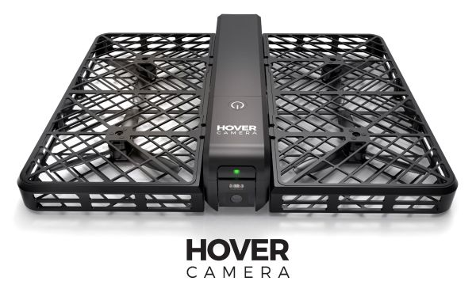

HoverCamera计算机视觉组招聘

团队介绍
零零无限科技有限公司计算机视觉团队致力于打造全球最领先的无人机视觉团队，在这里，你将能和各路一流人才一起工作，挑战无数不可能完成的任务。无畏&&专注，加入我们，和我们一起创造最智能的机器人！
宏观要求
- 聪明
- 有激情
- 有强烈的好奇心和自驱动的探索能力，有冒险精神，不惧变化，喜欢变化，有强大的随机应变能力，处变不惊
- 强大的微观细节处理能力
- 做过的每件事情，每一个细节都能够完美的处理，不留任何漏洞。
- 强大的宏观思考和掌控能力
- 做过的每件事情，都非常清楚其在宏观层面上的广度和深度，对总体有极强的掌控能力。
招聘职位
- 计算机视觉方向
该方向致力于革新所有和无人机相关的传统方法，包括但不限于：光流算法，数字稳像（EIS）算法，slam算法，无人机视觉壁障系统，3d重建算法，深度摄像头相关算法。和产品组一起挑全新的应用场景并解决相应的技术问题。
- 机器学习方向
该方向致力于结合机器学习以及深度学习技术来打造最智能的机器人，包括但不限于：传统目标检测算法（Haar+adaboost, LBP+adaboost, HOG+svm等等），传统目标跟踪算法（TLD，Struck， kcf等等），基于深度学习的目标检测算法，基于深度学习的目标跟踪算法等等。
- 视觉美化方向
该方向致力于打造最完美的后期照片和视频，包括但不限于：照片滤镜，照片自动生成技术，视频滤镜，视频自动剪辑等等。任何有助于美化和优化无人机后期效果的算法和方法都是我们考虑的对象。
任职要求
基本要求
- 扎实的数学和计算机功底
- 头脑灵活，有很强的学习能力和解决问题的能力
- 本科及以上学历
- 至少精通一门编程语言：C/C++, java, python, matlab, R等均可
- 加分项：
- 有发表过计算机视觉或者机器学习领域论文（水文不算）
- 有竞赛获奖者
- 永远具有好奇心
- 为各种未知和挑战而兴奋
- 被至少一个同事/同学评价为靠谱的人
- 追求卓越
- 超级强的学习能力
- 聪明
- 敢于直言
- 期望一份能够突破自我的事业
计算机视觉方向额外要求
- 在计算机视觉领域的某个方向有深入的研究及个人的见解，譬如，slam算法，光流算法， sfm算法， 3D重建算法， RGBD相关算法等等
机器学习方向额外要求
- 在机器学习或者深度学习领域的某个方向有深入的研究及个人的见解，譬如，svm算法，adaboost算法，CNN识别等等
视觉美化方向额外要求
- 有过相关的研究或者开发经验，包括但不限于：照片滤镜，视频滤镜，视频自动剪辑等等
- 有ios/android的开发经验,能够自己在移动端完成相应的demo